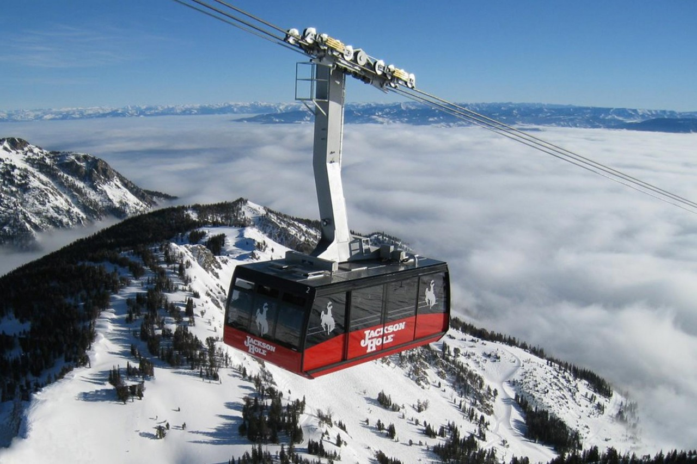
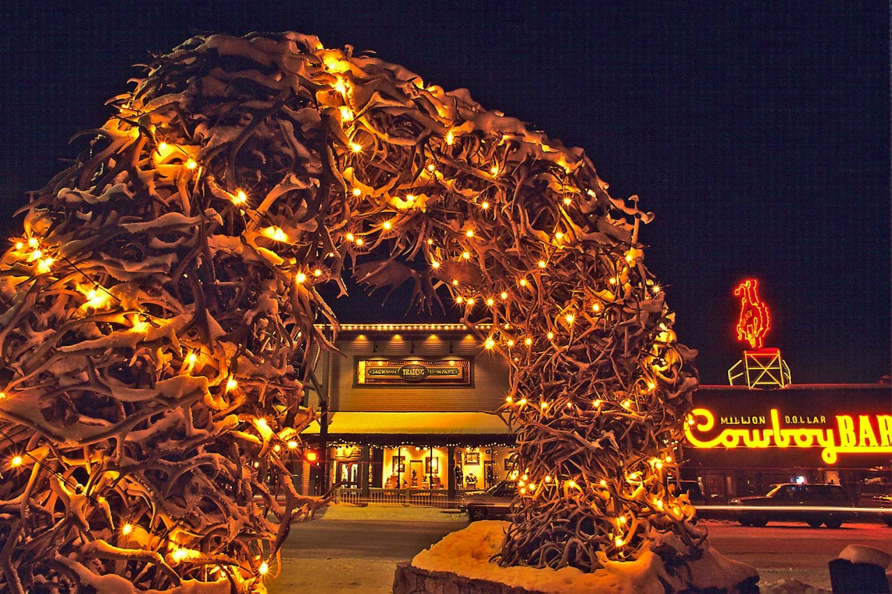
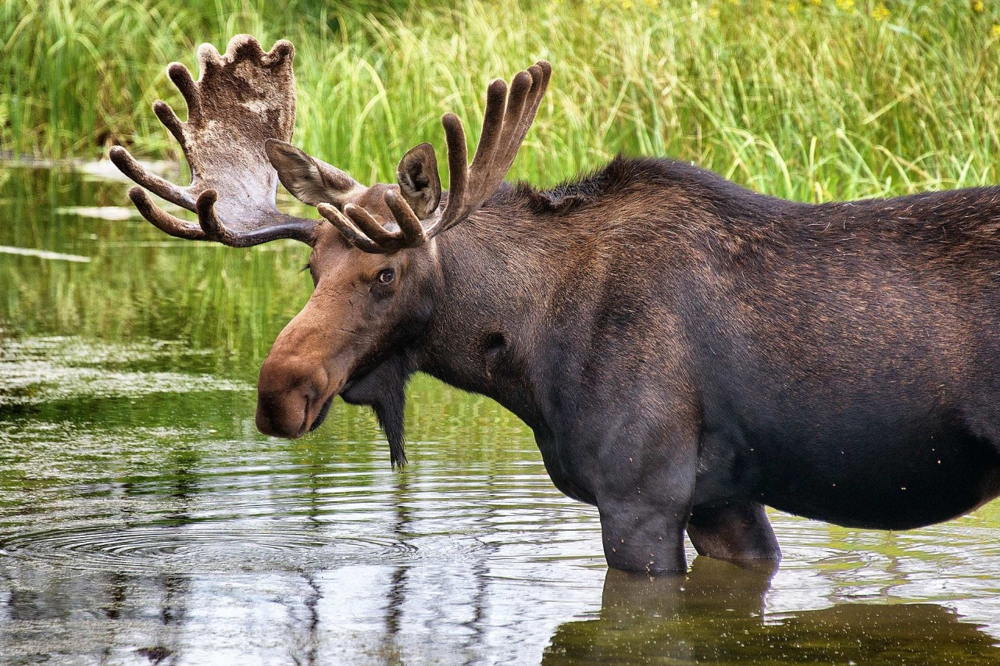

Activities
Experience the Old West: Jackson Hole brags that it’s the “last of the Old West,” and the bravado is real. Like ghostly brands on the wilderness, traces remain of the valley’s original homesteaders and all over town the cowboy flair lives on in spades.
  Contact us at the following media
- Facebook @Epicodus_Tripz
- Instagram @Epicodus_Tripz
- Snapchat @Epicodus_Tripz
- Phone: (206)555-4444
- Email: epicodus_tripz@epicodus.com
Look here for more information
We are happy to help you plan your next trip!